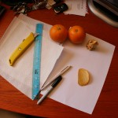
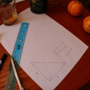
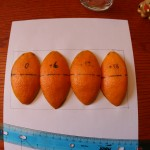
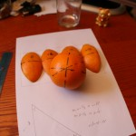
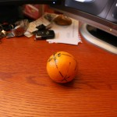

I spend some amount of time traveling by air; it’s never enough to satisfy me, but the time-and-space aspects of it always fill me with giddiness. Pondering those aspects gives an excellent opportunity to examine our place in the larger picture of space, for it’s not such a common event that a person can noticeably leave one spatial reality to spend time in another spatial reality. Making the situation more contorted is that we, humans, have attempted to force the application of a framework of calendrical time — an application which doesn’t conform so well to the properties of our planet – of a sphere.
To paint an example: i flew to New Zealand over Thanksgiving. I boarded a plane in Vancouver on a Friday evening around 5.30p; it was wintry – typical for that time of year. I flew for 14 hours and arrived in the morning — but it was now Sunday. Walking around downtown Auckland at 8.00a on what was already shaping up to be a warm summery day (typical for that time of year), i gave my friends T&E a call; they were in California so i knew they’d be awake since it was a few hours ahead: they were answering the phone at 11.00a — but on Saturday. On my return flight, i boarded a plane on Sunday night around 8.00p, flew for 13 hours, and arrived at 12.30p — it was Sunday, early afternoon.
So, how did we get to this state of chronometric cluster fuck? Well, this is just one of the side effects of our living on a sphere.
Instead of one of my usual tilting-at-windmills articles, i thought i’d do an article about geometry. Wait – don’t go – you might actually enjoy this. It’s an article about the differences between the geometry we perceive in our every day lives as ground dwellers, and the geometry we’re actually living in on Earth. The three topics i’ll talk about are:
- the time zone / calendrical scenario i described above
- those flight progress maps they show on video screens during flights
- the difference in seasons between hemispheres
Also, this can be an interactive article: should you choose to play along at home, you should scrounge up:
- two oranges
- a sheet of ordinary letter paper
- a ruler
- a sharpee
- a pen or a pencil (unless you want to use the sharpee on paper)
- paper towels
- one object of your choosing, no bigger than the oranges
- a Pringle
- a decently sharp knife
You’ll also need a responsible adult if you’re a minor (or particularly incompetent with a sharp knife).
A foreword:
This article will be ever so slightly math-y — it’s unavoidable.
I realize that one man’s orgy of gorgeous shapes and symbols is another man’s snooze-fest, so i’ll do my best to make it candy and consumable, while trying not to dumb it down.
Also, this article has turned into a beastly length, so i’ve made all of the headings collapsible, and collapsed by default (save this one); click on them to expand/collapse the section under each.
Lastly, in the spirit of exclusion, if you’re a person who believes in a flat earth, who has somehow ungnarled your purple polydactyl pointers into using a computer mouse and uncrossed your eyes long enough to read this, you can stop reading here. (Yes, it’s true: there are apparently **still** flat-earth people today — if you thought that the supporters of a geocentric universe had to come up with some inventive [read: absurd] models to support observational data, they had nothing on the modern flat-earther.)
On with the show:
 Whether you’ve decided to participate in parallel with your own materials, or just read along in observation, i’ve placed mile-marker photographs periodically through the article; starting off the photo accompaniment is one of the above inventory list gathered onto my desk. If you do decide to follow along, my one caveat is that you should wash the oranges as much as possible; who knows what sort of funky oranges i bought, but the waxy surface killed my sharpee in short time.
As preparation, around the top of each orange at its belly button i wrote the regular N-E-S-W compass points in their usual fashion. Then, on each orange and treating the belly button like the north pole on the Earth, i drew four lines ‘straight’ from the north pole to the south pole – one for each of those cardinal direction (N-E-S-W) markers. To keep lines as straight as possible, i used the ruler to draw a periodically spaced line; this worked fairly well, but your mileage may vary. At this point, my oranges looked like the photograph on the right.
Time zones and calendrical hoo-hah:
The history of time zones dates back some number of centuries and is well documented on Wikipedia should you be interested; suffice it to say that their usage has been globally adopted by all modern societies on the planet. Part of the problem with time zones is that we’re trying to assign a continually increasing value to a surface that is ‘closed’. By ‘closed’, i mean that the surface does not stretch off infinitely in any given direction and were you to set off in any direction staying on, or parallel to, the surface, you would eventually return back to the spot from which you began (much to consternation of flat earthers and many other people in the 15th century).
As a thought experiment, imagine a benevolent ruler of all the known lands in a time in which there wasn’t clear evidence that we lived on this closed surface. One day he decides that he’s going to travel to the edge of the world, surveying all his land, and bestowing his people with some gifts. He gets in his royal hot air balloon and travels due east along the equator. After every 1000 miles floated, he drops a big bag of gold to his loyal subjects below. With his 25th drop he might start to notice that things seem familiar as he’d be back over his starting location; should he not realize this, however, he will continue his pursuit until death or bankruptcy, never reaching the end of the world.
Common to the need of both the benevolent ruler and the implementers of the time zone system is the ability to say “stop — we’re repeating ourselves.”
Picking one of the oranges, we can see that it is currently divided-by-sharpee into 4 sections, each of which run from north to south. For simplicity, we’ll use these as our time zones (pretend that moving from one time zone to another is a change of six hours and not one hour). To make it visually more easy, draw an equator on the orange and ink a notable black circle at the spot where the equator crosses the pole-to-pole line running out the cardinal W point. Mine looks like the photo to the right. Orientating the orange with the north pole facing your ceiling and the first quadrant to the right of the black circle facing you, pick up the sharpee and write “0” in the first quadrant. Rotate the orange by a quarter turn and write +6 in the next quadrant. Repeat for +12 and +18.
Rotating another quarter turn at this point, we end up back at the quadrant with a ‘0’ in it — and here’s the moment — note that we could put +24 here (and then +30, +36, +42, +48, +54, …) and the clocks for all the little inhabitants on our Planet Orange would be consistent, but not their calendars.
So here’s root of our discontent. In the absurd case, we could let the time zone adding go on ad infinitum but, then, this makes for an even more confusing calendar situation (because then today would be every calendar day from now until the end of time). So what we’ve had to do is to put a stake in the ground, figuratively, and declare an international date line — a line on the planet on the eastern side of which it is one day, and on the western side of which is the next day.
As a brief historical note, the idea of an international date line can be found mentioned as early as the 14th century in a Talmudic commentary, though it seems likely that the idea had more to do with geographic and identity separation than regulating global time. This date line, referred to as the “K’tzai Hamizrach”, was at a longitude 90 degrees east of Jerusalem (which would be basically running just a smidgen east of Taiwan).
Since humans were involved in this whole process, the exact position of the Earth’s date line is steeped in politics and as such looks like a typical case of gerrymandering. This sets up dumb scenarios similar to Iceland insisting on being in the same time zone as the U.K. — like Kiribati extending well east of Samoa, but being exactly one day ahead, and at the same time of day, of Samoa — and like the Line Islands Time (pleasingly abbreviated as ‘LINT’) being outside of the normal -12 to +12 hour offset range at +14.
With all of this in mind, it is an easy thought experiment to design travel in which a given calendar day simply won’t ever exist in the life of a person; had that Air New Zealand flight flown a route that went more to the west initially, it would have crossed the international date line at midnight local time, effectively meaning that no one on that flight would have ever experienced Saturday the 29th of November, 2008: at one moment, the local calendar would have read Friday and the very next second the local calendar would have read Sunday.
Flight Progress Graphics:
If i had a dime for every time i’ve overheard people asking amongst themselves why our plane was flying in that ‘funny curve path’… well i don’t know exactly how much that would be – but i’d have some more money. The reality behind the situation isn’t that the plane is actually flying a funny curved path through space, but rather a problem with map ‘projections’. Without getting too too mathematical, this kind of projection could be thought of as a rule that tells you how to take one point on a surface and place it on another surface.
There’s a couple problems with projections as far as maintaining a good representation of the thing being projected. Two easy-to-talk-about cases would be world maps, which we’ll get to in a second, and something we see all the time: shadows.
With shadows, we’re losing a lot of information in the projection process due to a loss of dimensionality — in other words, we’re taking something which has 3 dimensions (like a chair), and projecting a representation of it (its shadow) into 2 dimensions (like the flat floor). This projection is ‘destructive’, because we can’t reasonably reconstruct all of the information about the original object (the chair) from looking only at its projection (its shadow). Ok, enough about that kind of everyday projection – back to maps…
So at this point, if you’re snarky in a delightfully weird way, maybe you’re asking, “Why do we need to do a projection to take information from one basically 2-dimensional surface (the surface of our planet) and put it on just another 2-dimensional surface (the poster version of the world map)?” The answer to this has to do with ‘curvature’.
A side track into curvature:
Curvature, in this sense, is a mathematical concept related to the bended-ness of an object in space; technically there are a number of kinds of curvature, but we’ll just use the loose word ‘curvature’. The simplest way for us to test the differences in curvature (aside from just staring at the object) is with triangles. You’ll remember from elementary school the lesson that the sum of all of the angles in the corners of a triangle equals 180°.
Let’s belt one out quickly on our piece of paper. Using the ruler, draw a 3″ line parallel to one edge of the paper; now draw a 3″ line from the start or end of that line parallel to the other edge so that you now have an L shape with equals sides — here we have a good old ‘right angle’ – 90°.  Now draw a line between the two open ends of the lines to make a triangle. I’ll spare you the trigonometry and you can take my word that each of the remaining two angles are 45°; so adding those two with the right angle equals our promised 180°. This wasn’t nearly rigorous, but trust me: any triangle you draw on that piece of paper will have its corner angles sum to 180°.
Now, pick up the second orange and draw an equator like we did with the first orange. Breaking out your stink eye on the north pole, notice that there is a right angle between any of the lines leaving the cardinal direction indicators. Picking two of the neighbouring cardinal directions, let’s say N and W, draw a right angle symbol, just to remind us. Now, follow the W line from the north pole down to the equator; notice that when they meet, it’s a right angle as well (draw another right angle symbol here). Lastly, follow the N line from the north pole down to the equator; here again, they meet at a right angle (and scribble another right angle symbol here). Holding the orange away from us and looking at this triangle, you’ll note that we now have a triangle in which our corner angles add up to 270°. This is because the orange has positive curvature, whereas the piece of paper was flat (it had zero curvature).
Noting the pattern that positive curvature surfaces have triangle angles that sum to greater than 180° and zero curvature surfaces have triangle angles that sum to exactly 180° then Patty McPattern, the drunk pattern-dog, will correctly guess that surfaces of negative curvature have triangle angles that sum to less than 180°.
Looking up from his Lagavulin, Patty asks, “What’s a negative curvature surface look like?” Well: stare at your Pringle (or dressage saddle) — this ‘saddle surface’ is the classic example of a surface with negative curvature. Ok, you can go ahead and eat the Pringle now, if you want.
Our perception of this curvature depends greatly on the altitude we are above the surface, as well as the amount of the surface we care about measuring. With regards to altitude on the Earth: walking on salt flats, you’d swear there was no curvature at all while if you were lucky enough to fly in the Concorde (damn you, and) the curvature would have been starkly plain to see.
With regards to the amount of surface being measured, if we’re endeavouring to build a sports stadium or a city block on planet Earth, then we needn’t pay heed to the real curvature of the planet. So when measuring the ground for something the size of a football field (or in terms of my orange, which has much much much less surface, the football field would be an area 20 million times smaller than the size of a red blood cell), we act as though we are dealing with something with zero curvature, like our piece of paper. If, instead, we’re endeavouring to pilot a plane from San Francisco to Frankfurt, or lay transoceanic fiber optics, then we need to start thinking about this curvature.
It’s exactly this latter point which entrenches the vast majority of our existence, making it easy to forget that we’re actually living in a number of spatial realities.
Because we have one 2-dimensional surface living on an object with curvature different than the 2-dimensional surface on which we’d like to have our map (like the page of a book, the wall of a room, …), we need to use a projection to get all of the information off our sphere and onto our map. There exist a lot of projections (Globular, Azimuthal Equidistant, Mollweide, Miller Cylindrical, … to name only a portion), but the one that will be most familiar to anyone who’s seen a world map is likely the Mercator projection (named after a 16th century Flemish geographer).
One way to visualize what’s going on with this projection is to grab your orange from the time zone section. In an ideal world, you could cut a single vertical slit from pole-to-pole (for example, along the W line) and scoop out the internal tissue; working more in reality, cut the orange into quarters along the pole-to-pole lines, remove the fruit, dry the skins and place them ordered like they were on the orange next to each other, like in my photo. 
By imagining that there are a number of parallel horizontal strips covering these skins, you’ll notice that some horizontal bands have more actual orange region (you can see almost no white area), while other bands have a lot less (there a several gaps of white area). Since this kind of projection maps a horizontal band of the skinned flattened orange to a corresponding horizontal band on our map, the bands which have gaps in between the orange segments must have their information visually spread out to fill in those missing gaps. As a result, the regions near the poles are given disproportionate amounts of real estate on the projected map.
This is the reason that, for example, Greenland and Canada seem so unrealistically large on the usual kind of world map.
Another way to imagine this is by looking at the shortest distance between two points. Fear not, you weren’t lied to by your elementary school math teacher: the shortest distance between two points is indeed a straight line; the fine print on that contract is the sticky wicket. It matters what surface that straight line is living on; for example, when we’re talking about those two points on the surface of the Earth or the orange,  that straight line is called a ‘geodesic’ (or less math-y: part of a ‘great circle’).
Pick up the second orange and draw two points – one in the ‘southern’ quadrant of the S-W strip and one in the ‘northern’ quadrant of the S-E strip. Now draw the shortest straight line connecting these two points — a geodesic.
This will take a little mental imagery again (and it’s cheating a bit in terms of legitimate projections): hold the orange in your hand and imagine that the orange is sitting inside of a clear plexiglass cube. Now, imagine that you’ve lifted the strip of skin that is that geodesic directly off the orange (preserving the same shape it was while on the orange) and floated it towards you until it smacked into the plexiglass. What you would see on the plexiglass would be one of those ‘funny curve paths’ people talk about.
The Seasons Change, Change, Change:
What is this thing that has Santa and sleigh arriving to Sydney houses midst heat waves and beach cavorting? Why are the northern and southern hemispheres forever seasonally separated from each other.
For those with a hint of remembrance from a science class, the proffered answer may be because it’s somehow due to the orbit of the Earth around the Sun being elliptical (like an oval, not a perfect circle). While this is technically true, it is actually pretty close to being a circle. When talking about the shapes of orbits, the term used is ‘orbital eccentricity’. If an orbit is a perfect circle, then its eccentricity is zero; the Earth’s orbital eccentricity around the Sun is 0.016, and the amount of time the Earth spends swinging through the most remote point of its orbit is only about a day and a half longer than it spends swinging through the most near point of its orbit.
The main bringer of seasonal difference is the ‘axial tilt’ of the Earth. If you picture the top of your desk as the plane in which the Earth travels in orbit around the Sun, then pick up your second orange, orientate it such that the north pole is facing the ceiling, rotate it a sixteenth of a turn towards the wall to your left and place it back on the table.  This is roughly the 23.4° tilt at which the Earth presently sits. While this isn’t entirely accurate, it’s good enough for this article.
Now, place the ‘one object of your choosing’ item on the table such that you can move your orange in an orbit around it — this will be the Sun. This obviously isn’t to scale as the Sun’s width is about 110 times that of the Earth’s, but something like that isn’t fitting on your table. Now, making sure to always preserve that 23-ish° tilt, move the orange around your the sun in quarter-orbit movements. Notice how the northern and southern hemispheres vary in closeness to the sun depending on where in the orbit the Earth-orange is, like in my photos below. Assuming a counter-clockwise orbit, from left to right we have Autumn (for the northern hemisphere) / Spring (for the southern hemisphere), then Winter/Summer, then Spring/Autumn, and finally Summer/Winter. It is this changing of who’s-closer-to-the-sun which dictates our winters and summers, and keeps Kiwi kids from understanding why Whoville is buried in snow.
This is an incredibly interesting experiment you’ve conducted. It’s interesting to see how day-dreams can turn into a vehicle for thought, especially in a way such as your own.